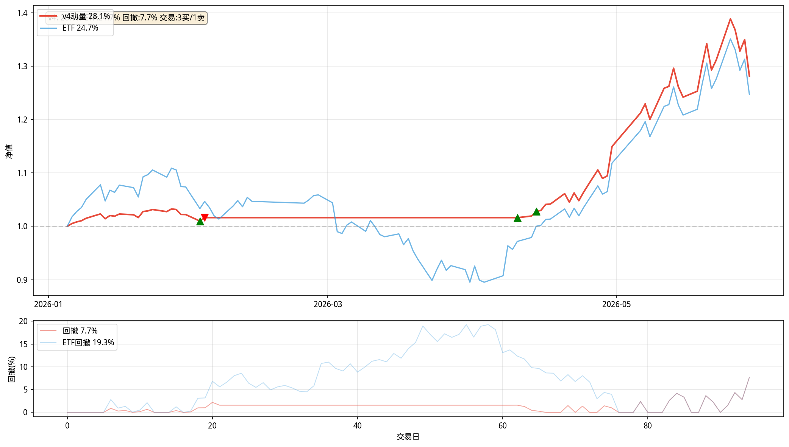

科创50ETF MA趋势渐进出清 v4
588000 | ¥100,000 | 递进仓位+布林带+MA动量
回测走势 (2026.01 - 2026.05)

交易日志
日期操作价格数量
2026-02-02买入1.52821,400
2026-02-03清仓1.54841,600
2026-04-10买入1.43728,300
2026-04-14买入1.47941,300
策略说明
递进仓位 (MA趋势渐进出清)
- 满仓 90% 双多头 + MA5领先MA10
- 重仓 70% 双多头 + MA5≤MA10
- 半仓 40% 短多长平
- 轻仓 25% MA5>MA20 + MA20斜率>0
- 空仓 0% 空头
因子调节：
- 布林带乘数：上轨×0.80 / 中轨下方×0.90 / 下轨多头×1.15
- MA动量加仓：偏离1%/3%/8%分别+5%/+10%/+15%仓位
- 初始上限60% | 确认≥1天 | 量比<0.8暂缓 | 震荡≤50%
手动操作：python3 ma_trend.py 查看信号
数据来源：baostock（sh.588000）
2026-05-30 ｜ v4动量版